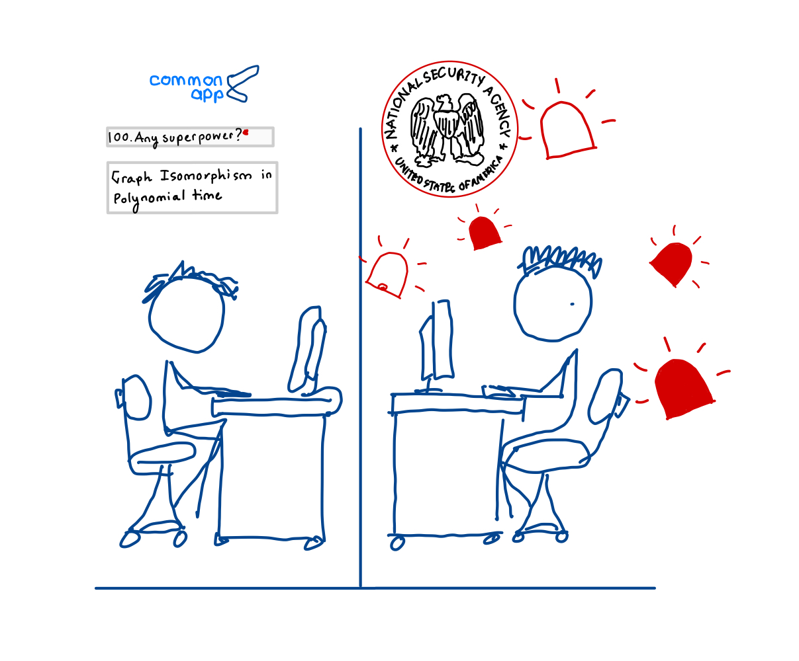

It’s becoming incresingly important to maintain a catalog of my activities during the summer. I ‘will’ write a seperate post about my study abroad semester. For now, I shall focus on the present. About two weeks after finishing my semester in Budapest, I arrived in Finland on May 26th. I had the weekend to get settled before I officially started working on May 28th.
What am I doing?
I’m currently working in the research group of Dr. Vanni Noferini at Aalto University in Espoo, Finland. Espoo is located to the west of the capital Helsinki. Dr. Vanni specializes in Matrix theory and he is advising my project in Algebraic Graph Theory. The project is scheduled to run for about 10 weeks. With that settled, let’s dive into the problem itself.
Let \(A \in M_{n\times n}(\mathbb{R})\). Define \[\mathrm{diag}(A): M_{n\times n} \to M_{n \times 1} \text{ where } \mathrm{diag}(A) = \{a_{ii}\}_{i=1}^{n}\]
The main conjecture is the following:
Conjecture 1.1: Let \(G\) and \(H\) be simple graphs, and \(A\), \(B\) be the corresponding adjacency matrices. Suppose there exists a unique permutation matrix \(\pi\) such that for all \(k\geq 0\) such that \[\mathrm{diag}(A^k) = \pi~ \mathrm{diag}(B^k)\] Then \(G\) and \(H\) are isomorphic.
It’s not too hard to show that one only needs to check for \(2\leq k \leq n\) (See Lemma 1.2). With a little bit more work, one can also show that it is enough to require that \(\pi = I\) for all \(k\) (See Lemma 1.3).
Those who know a little bit about graph theory may also recall that there is no known polynomial time algorithm1 (read: efficient) that can determine if two graphs are isomorphic. It’s also not known if the problem is NP-complete. Essentially, my conjecture, if true, provides a polyomial time algorithm that solves the graph isomorphism problem. Let me demonstrate this by computing the computational cost of the algorithm described in Conjecture 1.1.

We are interested in diagonal entries resulting from multiplication of adjacency matrices. Suppose we have a model of computation where field operations (i.e., muplication, addition) takes constant time 2. Multiplying two \(n\times n\) matrices requires \(n^3\) multiplications and \(n^2(n-1)\) additions, totaling \(2n^3-n^2\) steps. Then multiplying \(k>2\) adjacency matrices will require \((k-1)\cdot(2n^3-n^2)\) many steps. For each adjacency matrix, we’d like to perform \[ \sum_{k=2}^{n} (k-1)= \frac{(n-1)(n-2)}{2} \approx n^2\] many matrix multiplications. Hence, in total \(2n^2(2n^3 - n^2) \approx n^5\) many steps for a given pair of graphs. In computer science language, the time complexity of the algorithm is \(O(n^5)\), polynomial time.
The run time of the best known algorithm to date is \(2^{(O(\log n )^3)}\) (Harald Helfgott, 2017). The previously known bound is due to Luks and Babai: \(2^{(O( \sqrt{n \log n} )}\). This jump from sub-exponential to quasi-polynomial took about 40 years 3. Hence the suspicion that the conjecture could be false.
Now, I have sufficient reasons to be interested in the problem. With the help of some simple python, I have verified the converse of the conjecture for all pairs of non-isomorphic graphs on upto 10 vertices which is roughly \(1,229,2182\) many graphs. It seems like for small number of vertices, the condition does determine all graphs upto isomorphism. Right now, I am interested in special classes of graphs such as trees and regular graphs.
Appendix
Lemma 1.2: Let \(A,B\) be real symmetric. There exists a unique permutation matrix \(\pi\) for all \(k\geq 0\) such that \[\mathrm{diag}(A^k) = \pi~ \mathrm{diag}(B^k)\] if and only if \[\mathrm{diag}(A^k) = \pi~ \mathrm{diag}(B^k) ~~~(\star)\] for \(0\leq k \leq n\).
Lemma 1.3: \(A\) and \(B\) satisfy the diagonal criteria if and only if \(\mathrm{diag}(M^k) = \mathrm{diag}(N^k)\) where \(M,N\) are permutation similar to \(A\) and \(B\) respectively.
Footnotes
An algortihm that takes \(O(n^k)\) time to run where \(n\) is the size of the input and \(k\) is a positive constant.↩︎
The run time of the operation is independent of the size of input.↩︎
In practical terms, on an \(O(n^5)\) algortithm, if \(n\) doubles, the amount of time it takes to solve the problem is \(2^5 = 32\) times in proportion. On an \(2^{((O\log n)^3)}\) algorithm the growth is quasi-polynomial. Meaning for \(n=10,100,1000\), it respectively takes \(2^7 = 128\) and \(2^{19}\) times longer than the former.↩︎